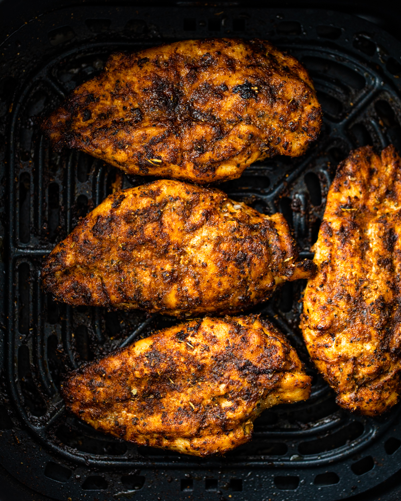

Air Fried Chicken

Description
Learn how to make juicy and flavorful grilled chicken breasts in the air fryer in just 20 minutes! This life-changing way of cooking chicken is great on rice, salads, in sandwiches, and so much more.
When you cut into a piece of this grilled chicken breast, you will be met with a juicy, tender piece of meat. The flavor is so incredible you seriously can’t resist eating it right away and going for the next taste.
I pretty much love chicken breasts more than any other cut of meat. If it’s cooked properly, it’s so juicy and delicious. You can season it in so many ways, and it’s great for all occasions. I think you will find that using the air fryer makes this chicken breast even more succulent, and it’s majorly EASY!
Ingredients
- Chicken: For best results, use boneless, skinless chicken breasts. You could swap them for chicken thighs, but the flavor is going to be different.
- Olive Oil: Using olive oil is the perfect way to give the chicken a yummy exterior that’s hard to beat. You could swap the olive oil for any other oil of your choice.
- Seasonings: The perfectly seasoned chicken comes from a combination of chili powder, Italian seasoning, garlic powder, onion powder, salt, and pepper.
Steps
- First, you will need to get the air fryer preheated to 390 degrees F.
- Start whisking together the seasonings in a small bowl until they are combined.
- Then take the chicken breasts and pound them out, so the chicken has an even thickness.
- Rub each side of the chicken with olive oil and add on the spices./li>
- place the seasoned chicken breasts in the air fryer and cook for 10 minutes on each side. It’s done once it reaches an internal temperature of 165 degrees F.
- Take the chicken out of the air fryer and let it rest for 5 minutes. Then slice into it and enjoy it!